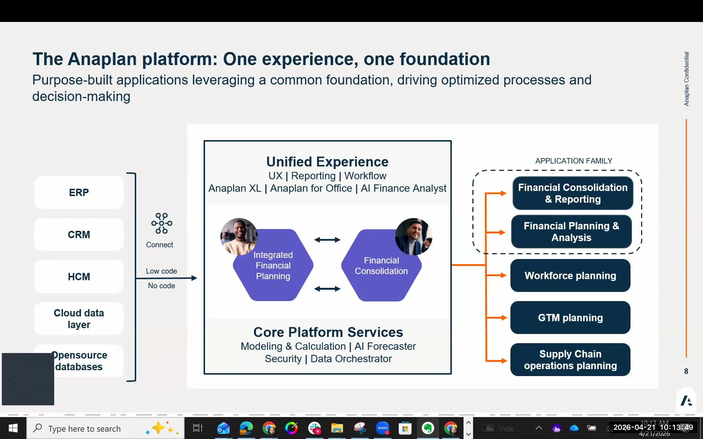
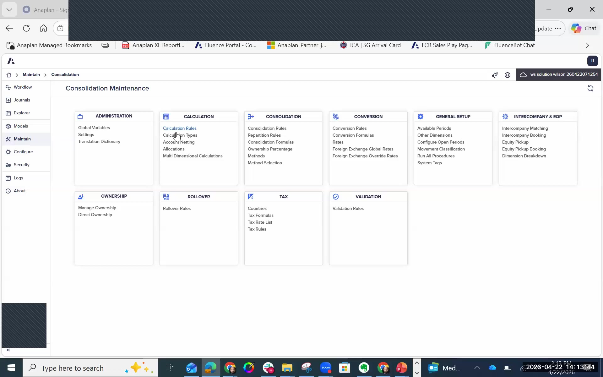

FCR Overview
What FCR is, where it fits in the Anaplan Finance suite, and why it exists
What FCR Is
FCR stands for Financial Consolidation and Reporting. It is Anaplan's statutory consolidation engine — the product used for group financial reporting, multi-entity currency translation, intercompany elimination, journal entries, and period-end close management.
FCR originated from Fluence Technologies, a consolidation software company that Anaplan acquired. It runs on Microsoft's cloud SQL Server stack, stores data in SQL staging tables, and uses a rule-based calculation engine to perform consolidations. The user interface was recently updated to match Anaplan's standard UX, but the underlying product architecture is Fluence's.
FCR released a new Anaplan-style user interface the week of the London workshop (April 2026). Participants' tenants show the new UI. Workshop slides may show the older interface — functionality is identical, the visual appearance is updated.
The Anaplan Finance Suite
FCR is one product in a broader Anaplan Finance offering. Understanding the full suite helps you position FCR correctly with customers and spot expansion opportunities.
| Product | What It Does | Audience |
|---|---|---|
| FCR Financial Consolidation and Reporting |
Group statutory consolidation, intercompany elimination, currency translation, journals, cash flow, period management | Group/Corporate Finance, Controller, CFO office |
| IFP Integrated Financial Planning |
Pre-built financial planning application (P&L, balance sheet, headcount, capex); built on the Anaplan Application Framework | FP&A, Business Finance |
| FPC Financial Planning and Consolidation |
Combined SKU: FCR + IFP in one purchase; Anaplan's primary Office of CFO offering; includes ADO integration tooling | Full Finance organisation |
| AXL / Anaplan Excel | Excel add-in reporting tool; connects directly to FCR and Anaplan planning models; used for board packs, management reports | Finance teams comfortable in Excel |
| Narrative Reporting (Disclosure Management) |
Last-mile reporting — Word and PowerPoint documents connected to live financial data; multi-user workflow-based approval; direct Workiva competitor | Corporate reporting, Investor Relations |
Anaplan visualises these applications as a "honeycomb" — a grid of dark blue hexagons, each representing a Finance application. FCR, IFP, Narrative Reporting, and AXL are the four primary Finance hexagons in this model.

Where FCR Fits — The Office of CFO Story
The CFO office needs two things: a plan (IFP) and actuals (FCR). IFP handles forward-looking financial planning — budgets, forecasts, driver-based models, scenario analysis. FCR handles the consolidation of what actually happened — loading trial balances from every entity's GL, eliminating intercompany balances, translating currencies, and producing statutory group financial statements.
Partners who can deliver only IFP are covering half the CFO's problem. Partners who can deliver both IFP and FCR cover the entire Office of CFO story — planning and reporting in one integrated platform. This is a significant competitive differentiator in the market.
What FCR Does
- Group consolidation — loads trial balances from multiple entities, applies consolidation rules, produces consolidated financial statements
- Currency translation — triangulation-based multi-currency conversion with configurable rate types per account (end rate, average rate, historical)
- Intercompany elimination — automated ARAP elimination, intercompany matching with auto-booking for differences below threshold
- Journal entries — reclassification and adjustment journals with audit trail separation
- Non-Controlling Interest (NCI) — automated NCI entries for majority-owned subsidiaries
- Equity method accounting — for 20–50% owned associates
- Balance sheet continuity and cash flow — movement-based cash flow statement generation
- Period management — structured month-end close cycle with validation reports
- Workflow automation — visual process builder for data collection, consolidation runs, and approvals
- Statutory reporting — output to Narrative Reporting / Disclosure Management for board packs and annual reports
FCR vs. Competitors
| Dimension | FCR | HFM (Oracle) | Cognos Controller (IBM) | OneStream |
|---|---|---|---|---|
| Technology stack | Microsoft cloud (SQL Server, Azure) | Oracle cloud / on-premise | IBM cloud / on-premise | Cloud-native (XF platform) |
| Reporting tool | AXL (Excel add-in), Narrative Reporting (Word/PPT) | SmartView (Excel), FDM | Excel, Cognos Analytics | Excel, built-in reports |
| Key differentiator | Microsoft tools, Anaplan Planning integration (IFP/FPC), modern UX | Mature, widely deployed; complex admin | Well-regarded in mid-market; aging platform | Modern architecture; growing market share |
| Consolidation approach | Tag-based rules; reusable across implementations | Method-based; HFM-specific scripting | Account-based rules | Rules-based; XF scripting |
| Planning integration | Native (FPC SKU = FCR + IFP) | Requires Oracle EPM Cloud | Requires separate IBM products | OneStream XF planning add-on |
